Workspace overview
Seeded totals, seven-day revenue and the next event in the organizer workspace.
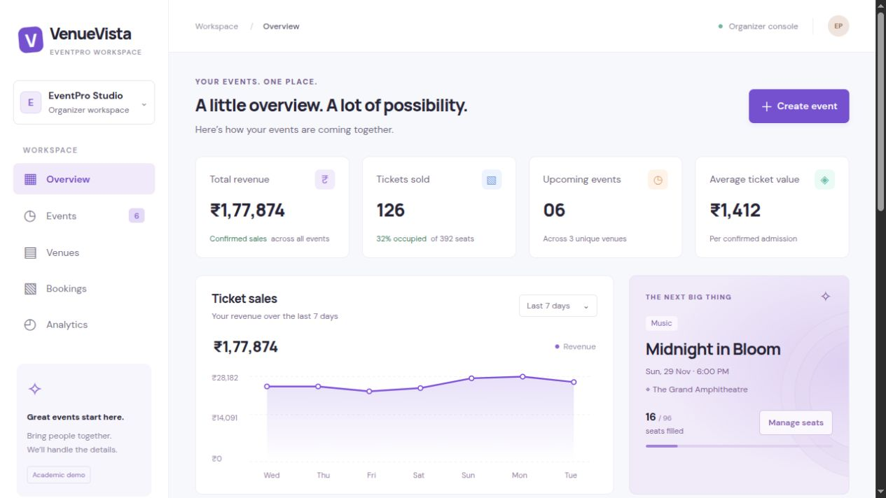
Actual screens from the local application. The gallery records a demonstration sequence; counts change as records are created, checked in or cancelled.
Seeded totals, seven-day revenue and the next event in the organizer workspace.

Event cards display schedule, venue, price, available capacity and category filters.
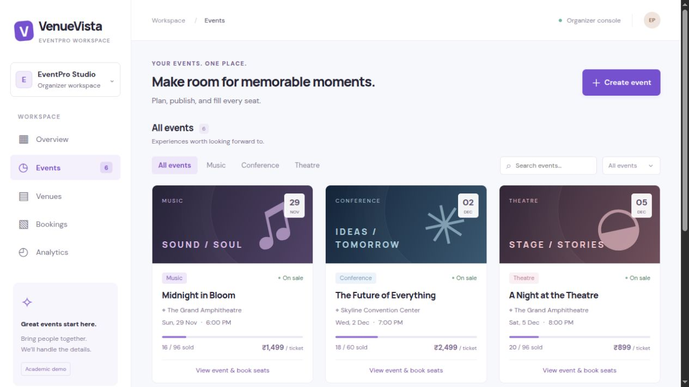
Seats C5 and C6 are selected for a sample guest. The server price produces a total of INR 2,998.
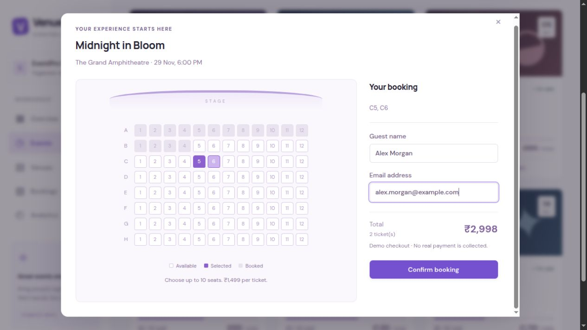
The API has saved the booking and returned its reference, amount and assigned seats.
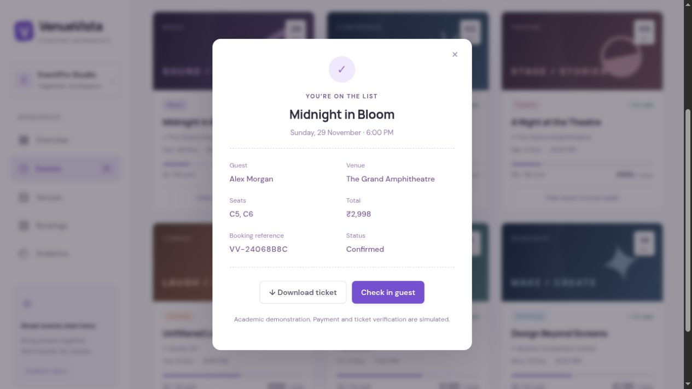
The confirmed sample booking has been marked checked in. Cancellation is no longer available.
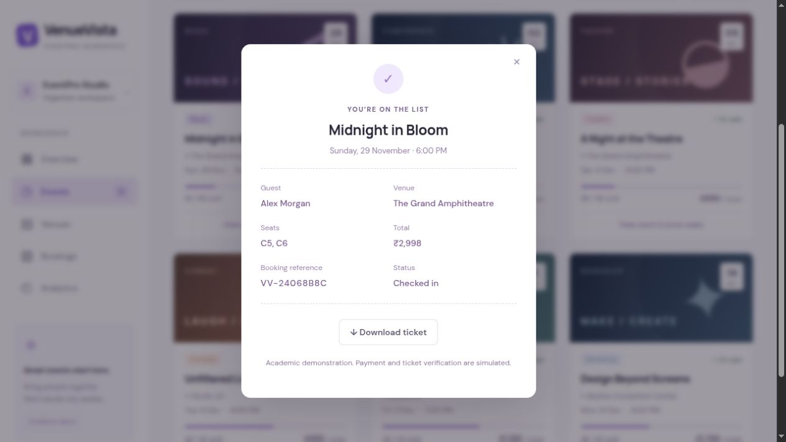
The guest list is filtered to the sample guest and shows the checked-in status.
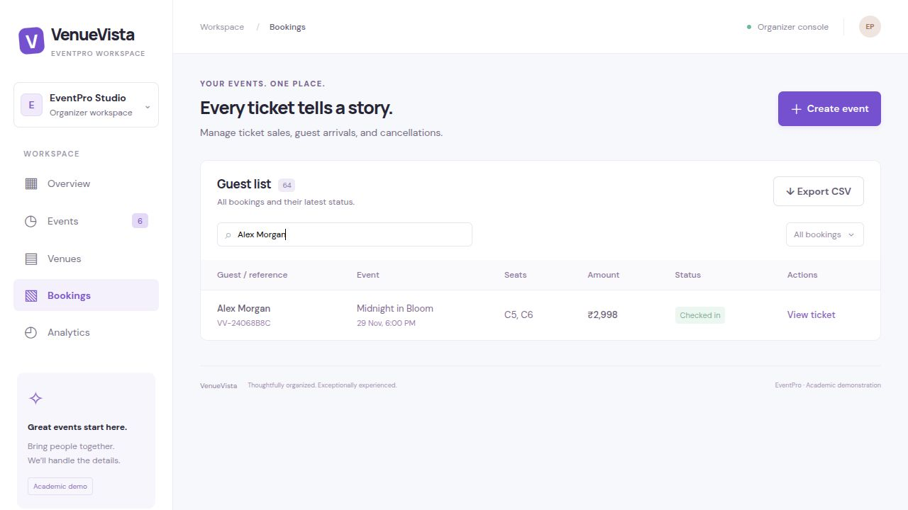
Three seeded venues show their rectangular seat capacity and scheduled event counts.
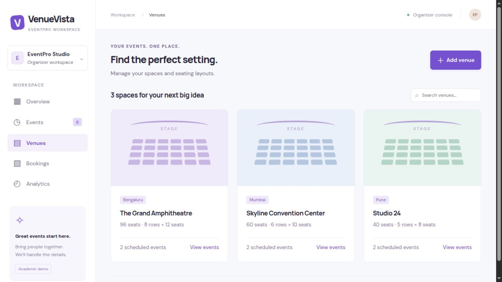
Campus Auditorium is configured with 6 rows and 10 seats per row, for 60 seats.
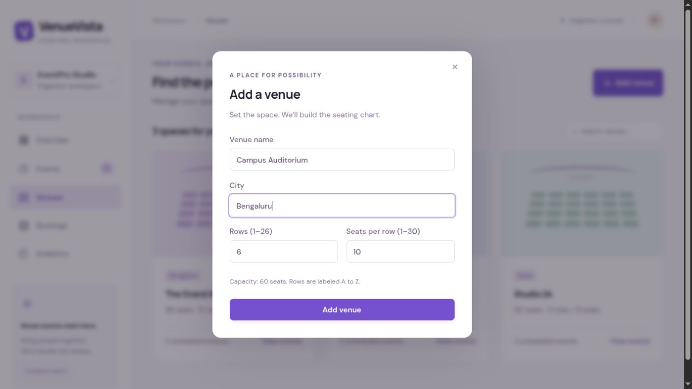
Campus Innovate 2026 is linked to the new venue with a future date and INR 799 ticket price.
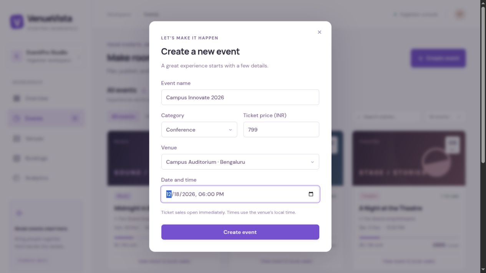
The organizer reviews the affected seats and confirmed revenue before cancelling a seeded booking.
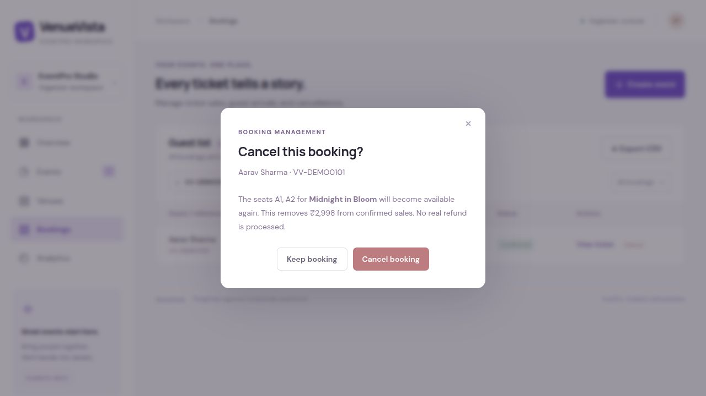
Current revenue and occupancy after a booking, a cancellation and a new event.
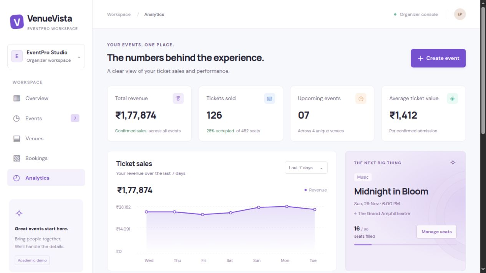
Confirmed ticket counts, occupancy and revenue are compared across individual events.
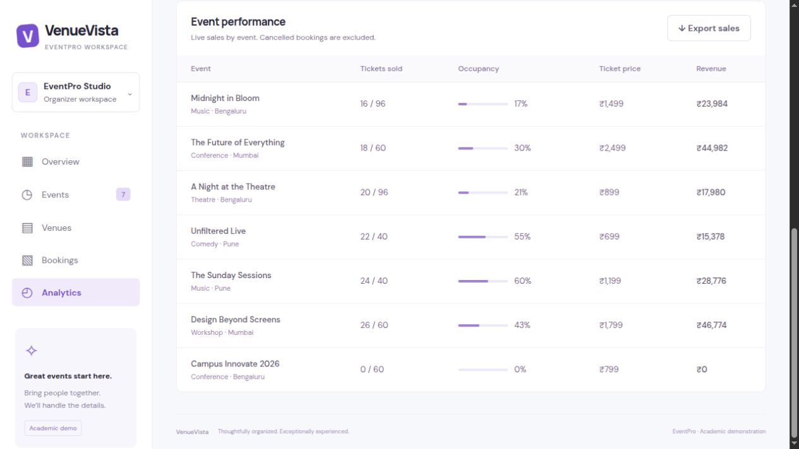
The organizer workspace adapts to a 390 by 844 mobile viewport with horizontal navigation.
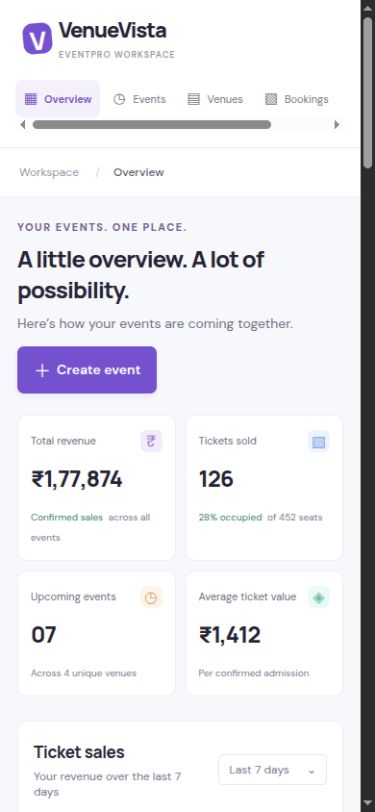
Historical PostgreSQL demonstration on localhost port 4301. The later Oracle output verifies the registered P_014 database stack.
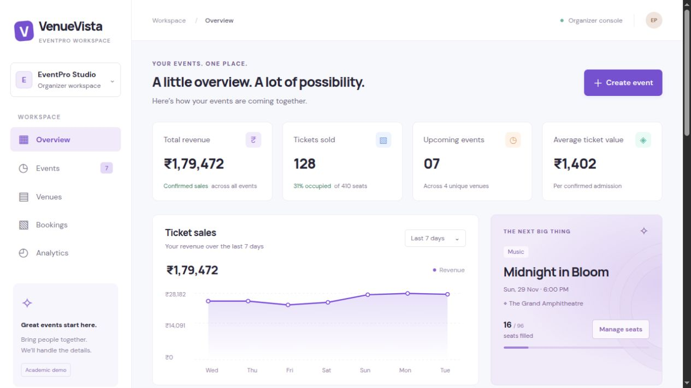
The updated P_014 application runs with Angular, Spring Boot and Oracle Database Free. Java Batch 4 project configuration.
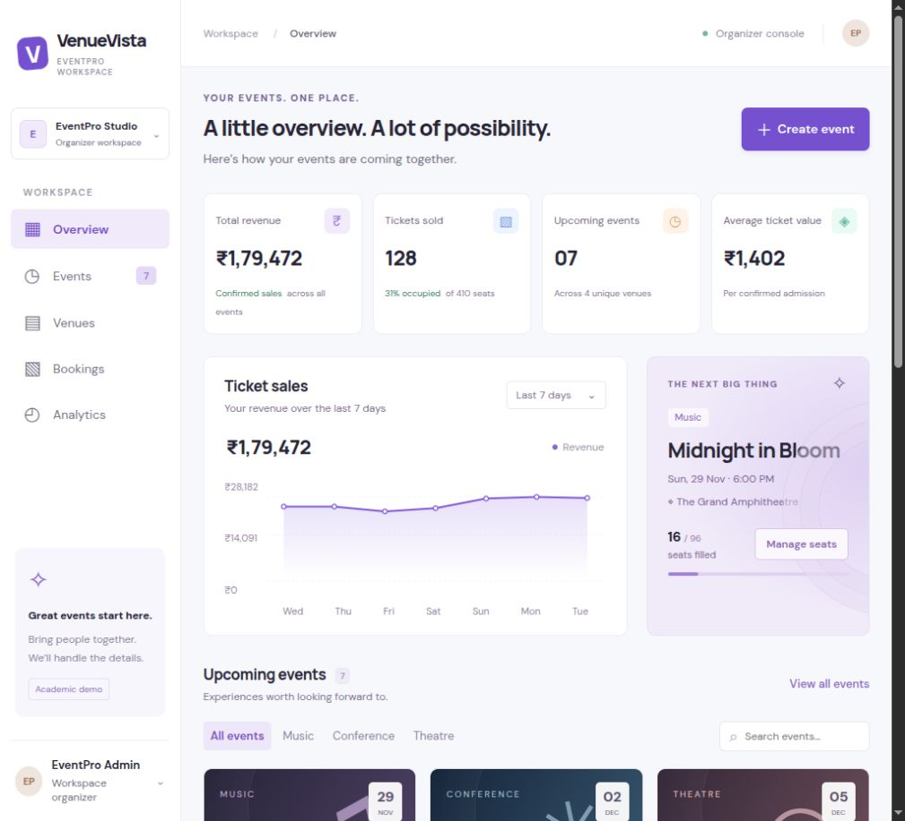